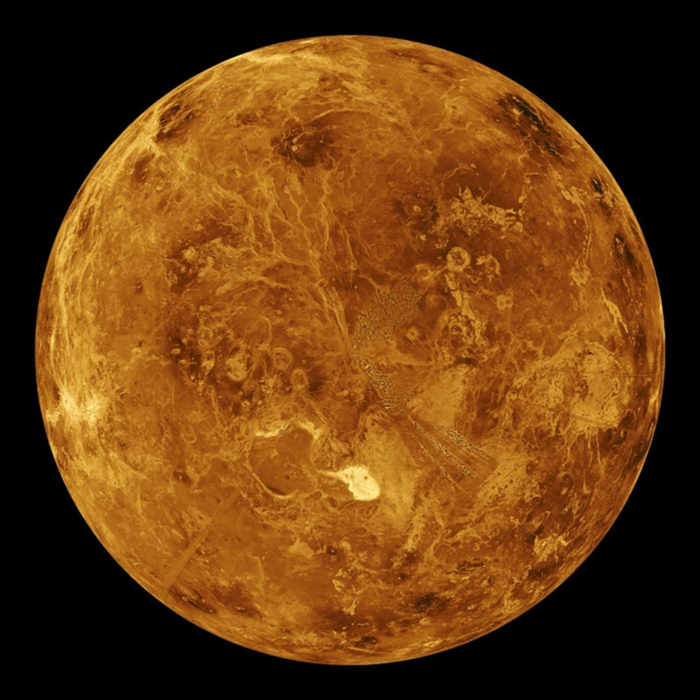

|  |
|
Aunque Venus no es el planeta más cercano al Sol, es el más caliente. Tiene una atmósfera densa, llena de dióxido de carbono, que provoca el efecto invernadero, y de nubes compuestas de ácido sulfúrico. Los gases atrapan el calor y mantienen a Venus bien calentito. De hecho, hace tanto calor en Venus que metales como el plomo serían charcos de metal fundido. Venus se ve como un planeta muy activo. Tiene montañas y volcanes. Venus es similar a la Tierra, en tamaño. La Tierra es solo un poco más grande. Venus es poco común porque gira en dirección contraria a la de la Tierra y la mayoría de los otros planetas. Y su rotación es muy lenta. Tarda alrededor de 243 días terrestres en girar solo una vez. Debido a que está tan cerca del Sol, un año pasa muy rápido. Venus tarda 225 días terrestres en dar toda la vuelta alrededor del Sol. Esto significa que, en Venus, un día es un poco más largo que un año. |